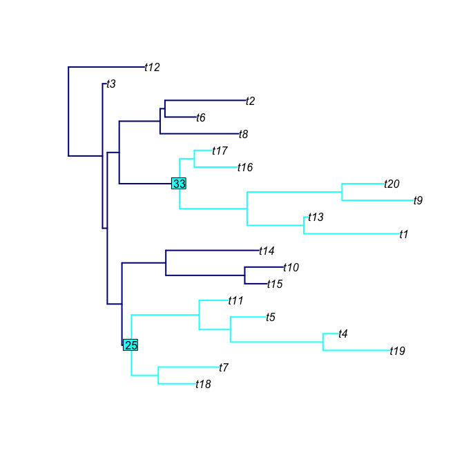

phyloTop provides tools for calculating and viewing topological properties of phylogenetic trees.
Installing phyloTop
To install the development version from github:
The stable version can be installed from CRAN using:
Then, to load the package, use:
Content overview
The key functions available in phyloTop are:
Tree statistics and topological properties:
avgLadder: find the average ladder size in a treecherries: find the number of cherries in a treecolless.phylo: find the Colless imbalance number of a treegetDepths: find the depth of each node in a treeILnumber: find the number of nodes with exactly one tip childladderSizes: find the size of any “ladders” in a tree (consecutive nodes, each with exactly one tip child)maxHeight: find the maximum height (equivalently, depth) of nodes in a treenConfig: find the sizes of all configurations (equivalently, clades) in a treenodeDepth: find the depth of a given node in a treenodeDepthFrac: find the fraction of nodes in a tree at a given depthnodeImb: find the imbalance of a given node in a treenodeImbFrac: find the fraction of nodes in a tree with an imbalance of a given threshold or morephyloTop: find a range of tree statistics for a list of trees (faster than calling each function individually)pitchforks: find the number of pitchforks (clades of size three) in a treesackin.phylo: find the Sackin index of a treesplitTop: find the split topology of a tree - the size of clades at a given depthstairs: find the “staircase-ness” measures, as defined by Norstrom et al. 2012treeImb: find the tree imbalance - the imbalance at each nodewidths: find the number of nodes at each depth in a tree
Examples
Tree statistics:
Apply tree statistic functions to a list of 10 random trees, each with 50 tips:
set.seed(123)
phyloTop(rmtree(10,50))
## avgLadder cherries colless.phylo ILnumber maxHeight pitchforks sackin.phylo
## 1 0.000 19 82 12 9 9 312
## 2 2.167 16 120 18 9 7 330
## 3 2.500 19 192 12 12 6 394
## 4 2.333 16 139 18 11 9 345
## 5 2.000 18 150 14 10 8 358
## 6 2.333 17 105 16 11 10 321
## 7 2.333 19 112 12 10 5 330
## 8 2.333 15 229 20 13 9 421
## 9 3.000 17 121 16 11 7 331
## 10 3.000 16 181 18 12 7 377
## stairs1 stairs2
## 1 0.5510 0.7257
## 2 0.5306 0.6752
## 3 0.5102 0.6907
## 4 0.6327 0.6487
## 5 0.5714 0.6880
## 6 0.6122 0.6649
## 7 0.5714 0.6696
## 8 0.6735 0.5760
## 9 0.6122 0.6487
## 10 0.6122 0.6237Tree visualisation tools:
Plot a random tree with 20 tips, highlighting the the clade(s) descending from nodes 25 and 33:
subtreeShow(rtree(20),nodeList=c(25,33), mainCol="navy", subtreeCol="cyan", nodeLabelCol="cyan", edge.width=2)
Contributing / asking a question
Contributions are welcome via pull requests.
Please note that this project is released with a Contributor Code of Conduct. By participating in this project you agree to abide by its terms.
Questions, feature requests and bugs can be reported using the package’s issue system.